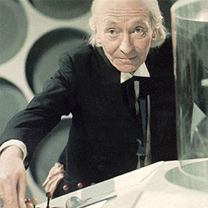

The First Doctor
William Hartnell
The First Doctor is the initial incarnation of the protagonist of the long-running BBC television science fiction series Doctor Who. He was portrayed by the actor William Hartnell from 1963 to 1966. Hartnell reprised the role in the tenth anniversary story The Three Doctors in 1973 – albeit in a reduced capacity due to his ailing health. In 1983, actor Richard Hurndall played the part of the First Doctor in the 20th anniversary story The Five Doctors, as William Hartnell had died in 1975. A cinematic version of the character, Dr. Who, was played by Peter Cushing.
Within the series' narrative, the Doctor is a centuries-old alien Time Lord from the planet Gallifrey who travels in time and space in his TARDIS, frequently with companions. When the Doctor is critically injured, he can regenerate his body; in doing so, his physical appearance and personality change. Hartnell's Doctor is the Doctor's "original" form. The regeneration plot device was introduced when Hartnell needed to leave the series, and consequently has extended the life of the show for many years. The First Doctor is the youngest incarnation of the Doctor, but has the most aged physical appearance, having grown old through a natural lifespan.
The Doctor's ability to regenerate allows him to appear younger, effectively taking on a new body that has yet to wear down with age. Respectively, later incarnations would portray the Doctor with a younger appearance, though his natural age continues to rise.